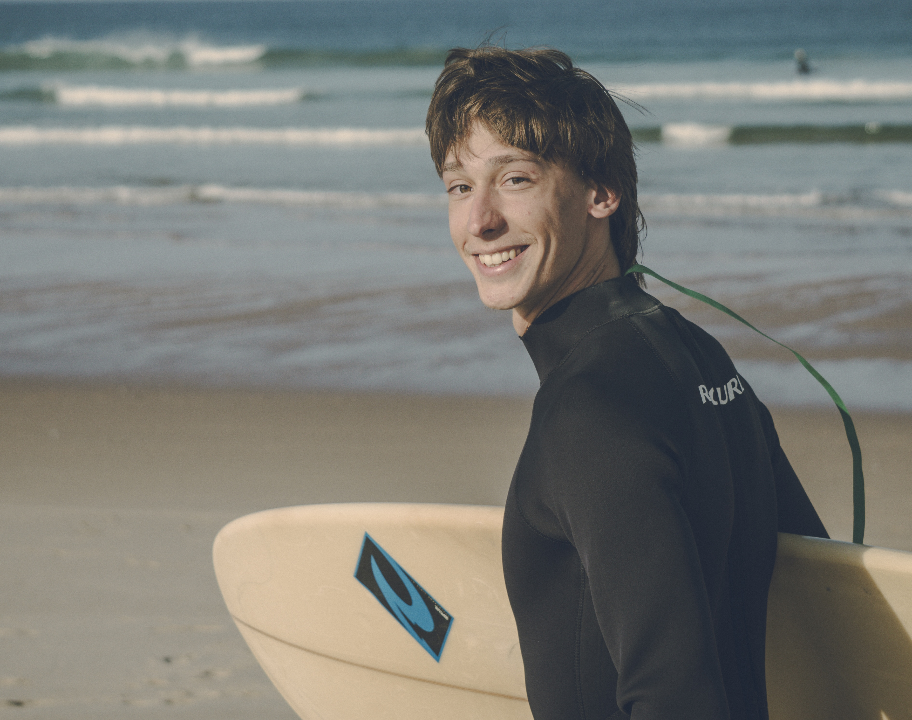

Was steckt hinter Notide?
NOTIDE ist weit mehr als nur eine Surfmarke – es ist ein Lebensgefühl, das aus meiner Begeisterung fürs Surfen und dem Drang nach kreativer Selbstverwirklichung entstanden ist. Die handgefertigten Surf-Textilien und Kunstwerke entstehen in limitierter Auflage hier an der Ostsee. Jedes Stück hat seinen eigenen Charakter und erzählt eine Geschichte von Kreativität, hochwertigem Design und nachhaltigem Konsum. Bei NOTIDE gibt's keine Massenware – hier entstehen besondere Pieces für besondere Menschen, die Wert auf Qualität und Authentizität legen.
Wer steckt hinter Notide?
 Als Gründer und Designer habe ich NOTIDE aus meiner Leidenschaft für Surfen, Kunst und bewusstes Leben erschaffen. Die Ostsee mag zwar nicht als Surf-Hotspot bekannt sein, aber genau diese Herausforderung hat mich inspiriert, meinen eigenen Weg zu gehen. Diese Einstellung prägt auch die nachhaltige Surfbekleidung von NOTIDE – ich mache die Dinge anders, mit Überzeugung und einem klaren Fokus auf Qualität statt Quantität.
NOTIDEs Phylosophie
NOTIDEs Philosophie Die Philosophie ist simpel: Echt sein in allem, was ich tue. NOTIDE steht für Transparenz, Qualität und bewusstes Handeln. Statt kurzlebiger Trends entstehen hier einzigartige Surf-Lifestyle Pieces, handgemacht und mit Liebe zum Detail. Die nachhaltige Produktion findet zum Teil regional statt, mit einem starken Fokus auf ehrliche Handarbeit und einer engen Verbindung zur Surf-Community. Denn echte Qualität entsteht dort, wo mit Herzblut gearbeitet wird.
Die Vision
Mit NOTIDE möchte ich Menschen zusammenbringen, die ähnlich ticken – egal ob's um die Liebe zum Surfen, authentischen Lifestyle, Selbstverwirklichung, oder die Wertschätzung für echte Handarbeit geht. Mein Traum ist eine aktive Surf-Community, die sich gegenseitig pusht und inspiriert. NOTIDE will zeigen, dass man seinen eigenen Weg gehen und dabei erfolgreich sein kann, ohne seine Werte über Bord zu werfen. Die Marke entwickelt sich ständig weiter, genau wie ich selbst – immer auf der Suche nach dem perfekten Flow zwischen Kreativität, nachhaltigem Style und authentischem Community-Spirit.